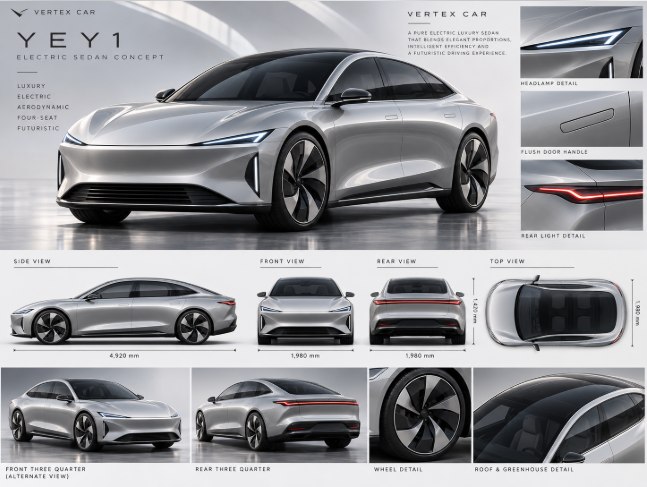

ELECTRIC SEDAN CONCEPT
VERTEX CAR YEY1
تصميم تصوّري لسيارة سيدان كهربائية فضية بأربعة مقاعد، بخطوط انسيابية وتفاصيل عصرية.

تفاصيل YEY1
تجمع اللوحة المناظر الأمامية والجانبية والخلفية والعلوية، مع تفاصيل المصابيح الرفيعة، ومقابض الأبواب المدمجة، والعجلات والسقف الزجاجي.
عرض الصورة الأصلية ←
فكرة قيد التطوير
هذه الصورة تعرض تصورًا بصريًا لمشروع VERTEX CAR YEY1. التفاصيل المعروضة أفكار تصميمية أولية، وليست مواصفات تصنيع معتمدة.